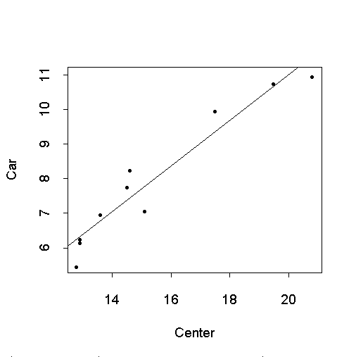

| / Home |
Keywords: regression
For each of ten streets with bike lanes, investigators measured the distance between the centre line and a cylist in the bike lane. They used photography to determine the distance between the cyclist and a passing car on those same ten streets, recording all distances in feet.
Data File (tab-delimited text)
| Effects of bike lanes on driver and bicyclist behavior, ASCE Transportation Eng. J., 1977, pages 243-256. |
| Devore, J. L. (1982). Probability and Statistics for Engineering and the Sciences. Brooks/Cole, Pacific Grove, California, pages 432-433. |
| Rasmussen, S. (1992). An Introduction to Statistics with Data Analysis. Brooks/Cole, Pacific Grove, California, Example 15.3. |

Call: lm(formula = Car ~ Center)
Residuals:
Min 1Q Median 3Q Max
-0.7699 -0.4485 0.03493 0.3561 0.8415
Coefficients:
Value Std. Error t value Pr(>|t|)
(Intercept) -2.1825 1.0567 -2.0654 0.0727
Center 0.6603 0.0675 9.7858 0.0000
Residual standard error: 0.5821 on 8 degrees of freedom
Multiple R-Squared: 0.9229
F-statistic: 95.76 on 1 and 8 degrees of freedom, the p-value is 9.975e-006
|
Home - About Us -
Contact Us Copyright © Gordon Smyth |